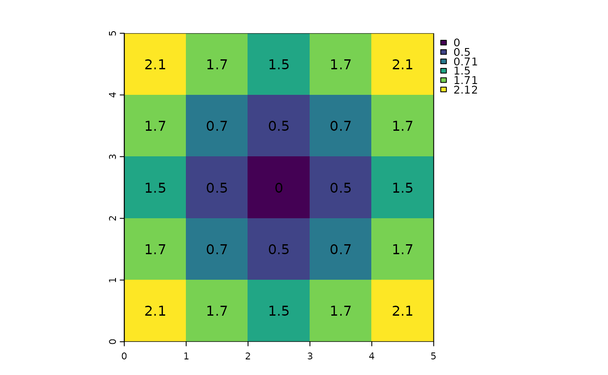
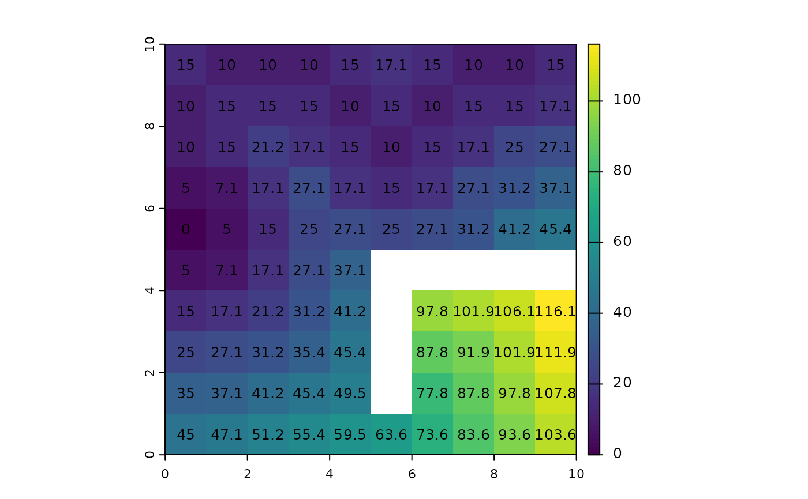

Cost-distance
costDist.RdUse a friction (cost) surface to compute the cost-distance from any cell to the border of one or more target cells.
Distances are computed by summing local distances between cells, which are connected with their neighbors in 8 directions, and assuming that the path has to go through the centers of one of the neighboring raster cells.
Distances are multiplied with the friction, thus to get the cost-distance, the friction surface must express the cost per unit distance (speed) of travel.
Usage
# S4 method for class 'SpatRaster'
costDist(x, target=0, scale=1, maxiter=50, filename="", ...)Arguments
- x
SpatRaster
- target
numeric. value of the target cells (where to compute cost-distance to)
- scale
numeric. Scale factor. The cost distance is divided by this number
- maxiter
numeric. The maximum number of iterations. Increase this number if you get the warning that
costDistance did not converge- filename
character. output filename (optional)
- ...
additional arguments as for
writeRaster
Examples
r <- rast(ncols=5, nrows=5, crs="+proj=utm +zone=1 +datum=WGS84",
xmin=0, xmax=5, ymin=0, ymax=5, vals=1)
r[13] <- 0
d <- costDist(r)
plot(d)
text(d, digits=1)

r <- rast(ncols=10, nrows=10, xmin=0, xmax=10, ymin=0, ymax=10,
vals=10, crs="+proj=utm +zone=1 +datum=WGS84")
r[5, 1] <- -10
r[2:3, 1] <- r[1, 2:4] <- r[2, 5] <- 0
r[3, 6] <- r[2, 7] <- r[1, 8:9] <- 0
r[6, 6:10] <- NA
r[6:9, 6] <- NA
d <- costDist(r, -10)
plot(d)
text(d, digits=1, cex=.8)
